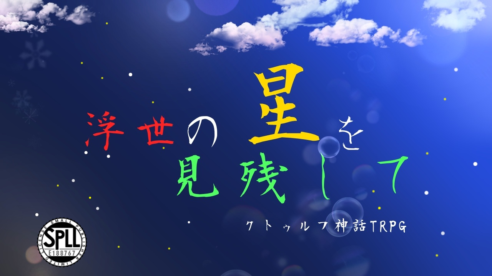

作品紹介
『貧乏人』と『大富豪』が送る、身分差2PLシナリオ
奇縁な出会いから展開する超王道ファンタジー
ユニークなNPCたちと共に、世界を揺るがす事件へと立ち向かえ！
◆ハンドアウト
☆共通ハンドアウト
貴方達は姫石楠花大学(ひめしゃくなげだいがく)に通う大学生である。ただし、お互いに面識は無い。学部や学科は同じでも、違っていてもいい。
☆HO1【貧乏人】
貴方は孤児院出身の大学生だ。孤児院を出て以降、大学に通いながら一人暮らしをしている。そのため、日々貧しい暮らしを送っている。野良犬の『ハチ』によく懐かれており、たまに遊んでやることがある。
推奨技能:日本刀
☆HO2【大富豪】
貴方は大企業社長の 令嬢/子息 だ。親のおかげで何不自由ない生活を送っているが、大学には自身の実力だけで合格し、現在通っている。基本的には、貴方に仕える執事の『嶽山盾(たけやまじゅん)』と行動を共にする。
推奨技能:経理 推奨技能:日本刀
※本作はクトゥルフ神話TRPG第6版向けの作品です。シナリオのあらすじやプレイ情報など、詳細は配布ページをご確認ください。
作品情報
- システム：クトゥルフ神話TRPG 第6版
- 配布・頒布先：BOOTH
- 人数:2人(秘匿あり)
- 想定プレイ時間:ボイセで14〜15時間(+事前導入HOごとに約1時間あり)
- 背景:現代日本
- 推奨技能:交渉系技能、探索技能、戦闘技能
- 準推奨技能:心理学あるいは人類学
- 推奨探索者:頼まれたことを積極的に引き受けてくれる人、好奇心旺盛な人
- 神話生物への独自の解釈、オリジナルAF・呪文・神話生物が多数登場します。
配布ページ
作品の詳細、価格、ダウンロード内容、利用条件などは、以下のBOOTHページでご確認ください。
BOOTHで作品を見る ↗#浮世星